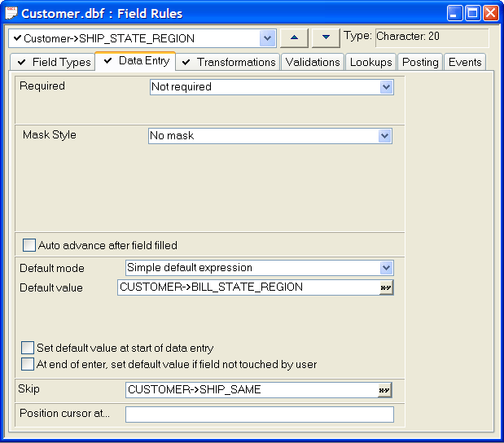

Required Fields
Use the Required rule to make sure a field contains a value before exiting. You can set the Required rule so that a field must always be filled, or filled if a condition evaluates to TRUE.

For example, in a table containing information about rental property, where customers must either leave a cash or credit deposit for rented goods, you can use a Conditionally Required rule to make sure the Credit_Card field is filled if the Cash_Dep field is blank.
If the conditions for the field have not been satisfied before the focus leaves the record, a message appears, prompting the user to correct the problem.
In the Control Panel select the table and click Table > Edit Field Rules.
Display the Field Types tab.
Select a value from the Required field. The possible values are:
"Not required" - the default
"Always required"
"Conditionally required"
If you selected "Conditionally required" in step 1, enter an expression in the Required Condition field. The expression must evaluate to TRUE (.T.) or FALSE (.F.). Click
 to use the
Expression Builder to help you define the expression.
to use the
Expression Builder to help you define the expression.
Using the Previous Value as a Default
In the Control Panel select the table and click Table > Edit Field Rules.
Select the field that you want set to the previous value.
Display the Data Entry tab.
Select "Always required" from the Required list.
Select "Use previous value as Default" from the Default mode list.